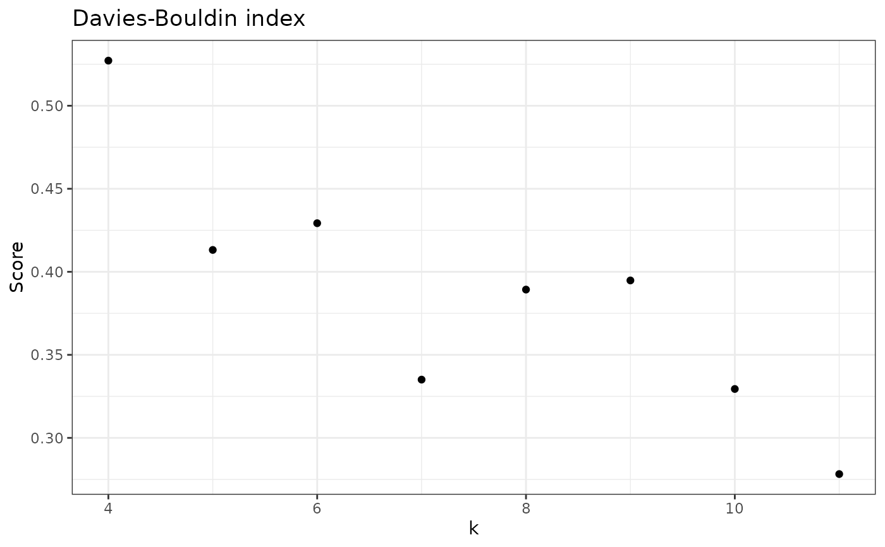

Calculates Davies-Bouldin (DB)Index for a given sample.
Usage
check_DB(
data,
sample_id,
samples_col = "Sample",
abundance_col = "Abundance",
range = 3:10,
with_plot = FALSE,
...
)Arguments
- data
A tibble with, at least, a column for Abundance and Sample. Additional columns are allowed.
- sample_id
String with name of the sample to apply this function.
- samples_col
String with name of column with sample names.
- abundance_col
String with name of column with abundance values.
- range
The range of values of k to test, default is from 3 to 10.
- with_plot
If FALSE (default) returns a vector, but if TRUE will return a plot with the scores.
- ...
Extra arguments.
Details
DB is an index used to decide the number of clusters in a clustering algorithm.
This function, check_DB(), calculates the DB index for every k in a pre-specified range
of values. Thus providing a score for each number of clusters tested (k). The default
range of cluster values (k) is range = 3:10 (see why this is in Pascoal et al., 2023).
However, this function may calculate the DB index for all possible k's.
Note that DB index is not an absolute value that indicates the quality of a single clustering. Instead, it allows the comparison of clustering results. Thus, if you have several clusterings, the best one will be the one with higher DB index.
Data input
This function takes a data.frame with a column for samples and a column for abundance (minimum), but can take any number of other columns. It will then filter the specific sample that you want to analyze. You can also pre-filter for your specific sample, but you still need to provide the sample ID (sample_id) and the table always needs a column for Sample and another for Abundance (indicate how you name them with the arguments samples_col and abundance_col).
Output options
The default option returns a vector with DB scores for each k. This is a simple output that can then be used
for other analysis. However, we also provide the option to show a plot (set with_plot = TRUE) with
the DB score for each k.
Explanation of Davies-Bouldin index
The DB index (Davies and Bouldin, 1979) is an averaged measure of cluster similarity to the closest cluster. This provides a sense of how separated the clusters are.
Lower DB scores are better, because they represent more distinct clusters. Higher values of DB indicate overlapping clusters.
Let \(N\) be the number of clusters and \(R_i\) the similarity between the i'th cluster and the cluster most similar to it. The DB index is calculated as the mean similarity between each cluster and the most similar cluster,
$$DB = \frac{1}{N}\sum_{i=1}^{N}R_i$$
Thus, \(R_i\) is the maximum similarity among all possible combinations of \(R_ij\), with \(i \neq j\).
To get \(R_ij\), let \(S_i\) be the intra-cluster dispersion of \(i\), \(S_j\) be the intra-cluster dispersion of cluster \(j\) and \(M_ij\) be the distance between clusters \(i\) and \(j\).
The similarity between any two clusters, \(i\) and \(j\), is:
$$ R_{ij} = \frac{S_i + S_j}{M_ij}$$
The distance between any two clusters, \(M_ij\), is measured as the distance between the centroids of both clusters, \(\left\lvert C_i - C_j \right\rvert\).
The dispersion of clusters, \(S_i\), provides a sense of intra-dispersion of a given cluster.
To calculate \(S_i\), let \(T_i\) and \(T_j\) be the number of observations in \(i\) and \(j\), respectively; let \(X_j\) be the value for j'th observation (again, \(i \neq j\)).
$$S_i = \sqrt{\frac{1}{T_i}\sum_{j=1}^{T_i}\left\lvert X_j - C_i \right\rvert}$$
Note that this is the case for euclidean distances.
References
Davies, D. L., & Bouldin, D. W. (1979). A Cluster Separation Measure. IEEE Transactions on Pattern Analysis and Machine Intelligence, PAMI-1(2).
Examples
library(dplyr)
# Just scores
check_DB(nice_tidy, sample_id = "ERR2044662")
#> [1] 0.3721866 0.5271704 0.4131651 0.4292696 0.3350836 0.3892966 0.3948026
#> [8] 0.3294451
# To change range
check_DB(nice_tidy, sample_id = "ERR2044662", range = 4:11)
#> [1] 0.5271704 0.4131651 0.4292696 0.3350836 0.3892966 0.3948026 0.3294451
#> [8] 0.2782100
# To see a simple plot
check_DB(nice_tidy, sample_id = "ERR2044662", range = 4:11, with_plot=TRUE)
